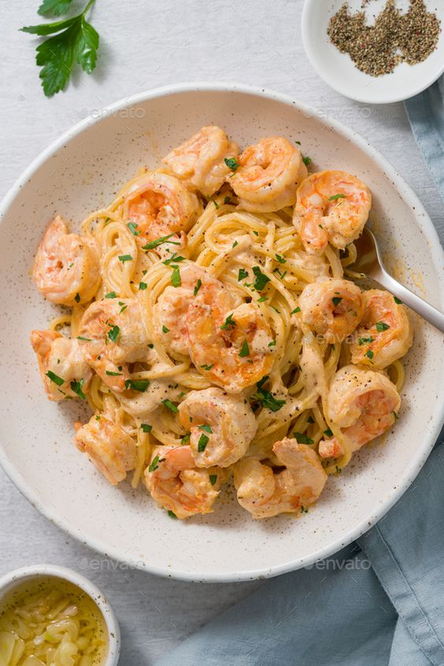

Prawn Pasta

Description
Garlic prawn pasta is a savory dish that brings together the rich flavors of seafood and the boldness of garlic
- 250g pasta (linguine, spaghetti, or fettuccine)
- 300g prawns, peeled and deveined
- 4 cloves garlic, minced
- 2 tablespoons olive oil
- 1/2 cup cherry tomatoes, halved
- 1/4 cup fresh parsley, chopped
- Salt and pepper to taste
Steps
- Cook the pasta in a large pot of salted boiling water according to the package instructions until al dente. Drain and set aside, reserving a cup of pasta cooking water.
- In a large skillet, heat olive oil over medium heat. Add minced garlic and sauté for about a minute until fragrant, being careful not to burn it.
- Add the prawns to the skillet and cook for 2-3 minutes until they turn pink and opaque. Season with salt, pepper, and red pepper flakes if using.
- Add the halved cherry tomatoes to the skillet and cook for another 2-3 minutes until they start to soften.
- Add the cooked pasta to the skillet along with a splash of pasta cooking water. Toss everything together to coat the pasta with the garlic prawn sauce. Adjust the seasoning if needed.
- Remove the skillet from heat and sprinkle chopped parsley over the pasta. Optionally, sprinkle grated Parmesan cheese on top for extra flavor.
- Serve the garlic prawn pasta hot, garnished with more fresh parsley and Parmesan cheese if desired.
Back to the mainpage